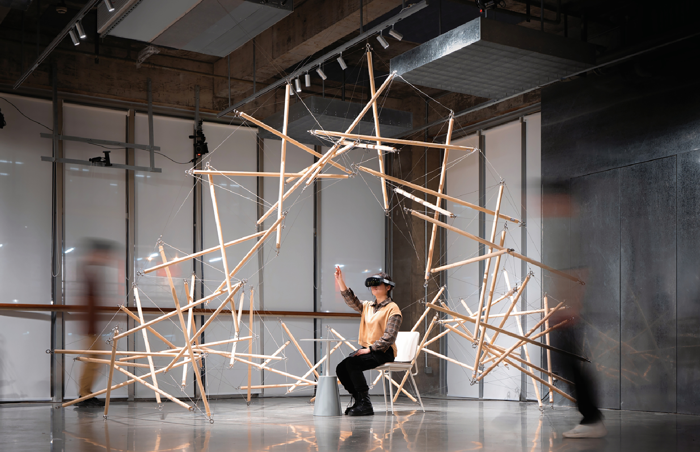
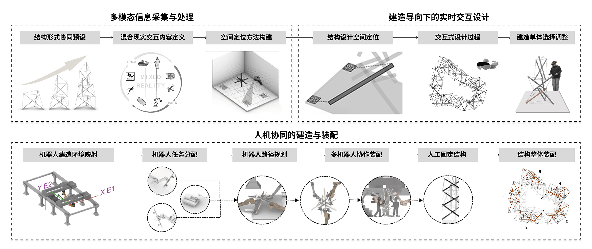
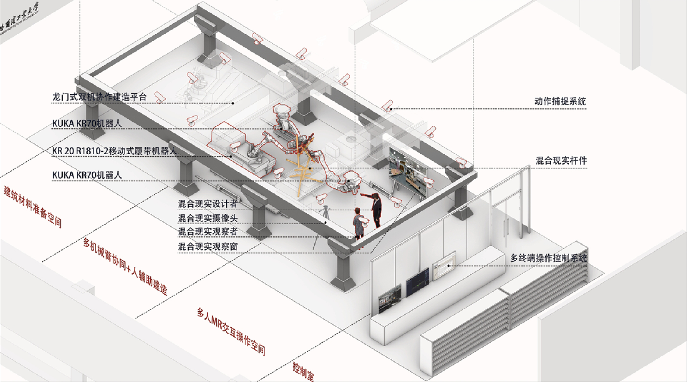
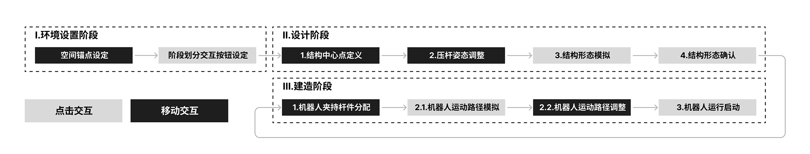
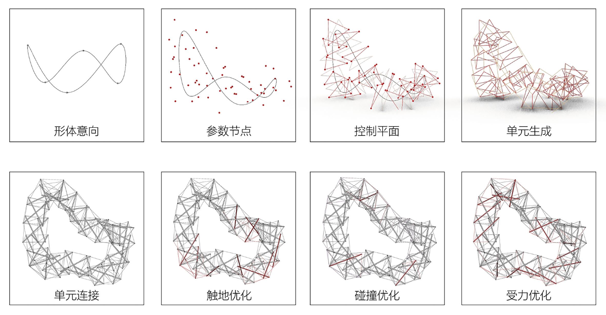
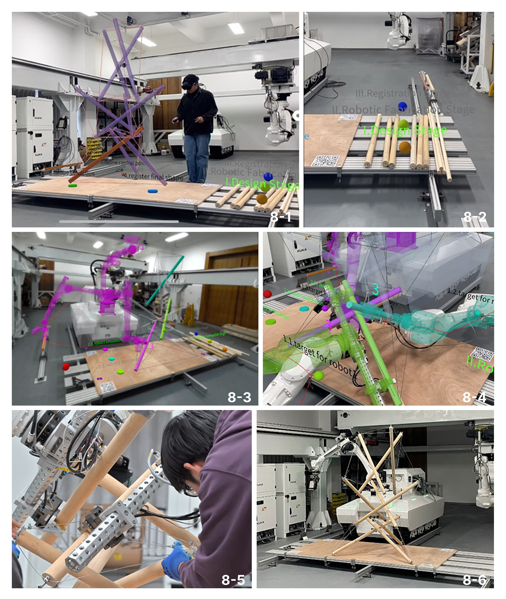
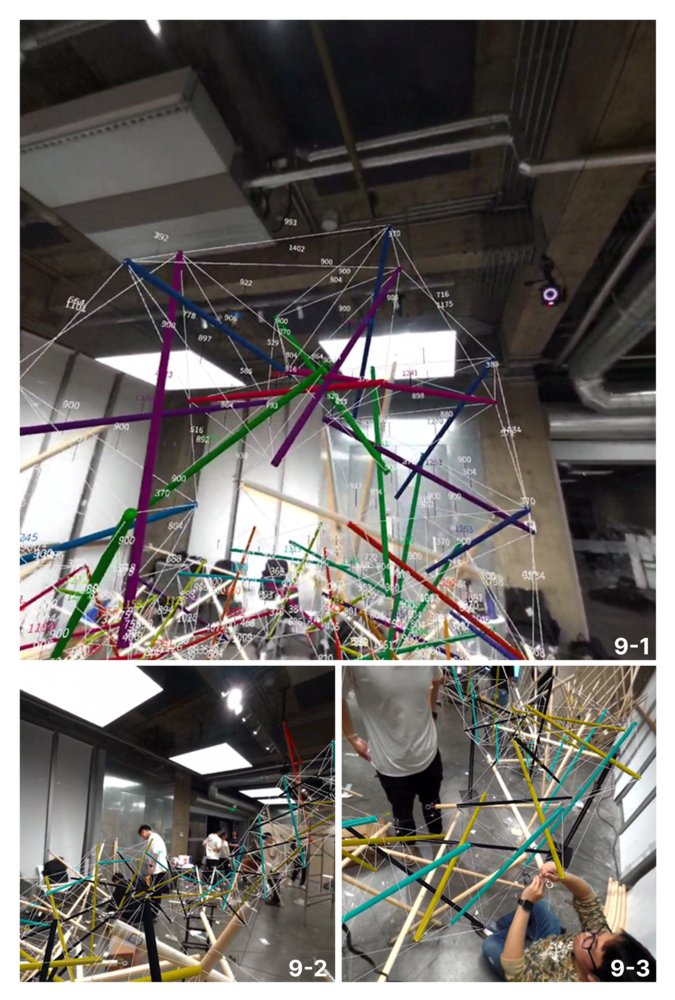

Mixed-Reality Tensegrity
Design and Construction
An integrated workflow for interactive design, three-robot construction, and manual assembly.

Design and construction in the same spatial model.
This research applies mixed reality to the design and construction of a full-scale timber tensegrity installation. Environmental information, structural behavior, robot movement, and manual assembly are coordinated through one spatial workflow.
The final structure measures approximately five metres around and three metres high. It consists of twenty three-strut, nine-cable units assembled from sixty timber rods.
- Year
- 2024
- Location
- Harbin, China
Video
Three linked phases.
The workflow begins by registering the physical environment and coupling spatial data. It then supports performance-oriented interactive design before moving into robot-assisted construction and manual assembly.



Performance-oriented design.
The design process links mixed-reality interaction with parametric modeling and form finding. Geometry, topology, structural behavior, and collision conditions can be reviewed while the model remains connected to the construction environment.

Three robots, followed by manual assembly.
Three robots position and hold the timber struts while the designer assigns tasks and reviews motion paths in mixed reality. Cables are attached by hand, and the completed units are combined into five larger substructures before final assembly.

